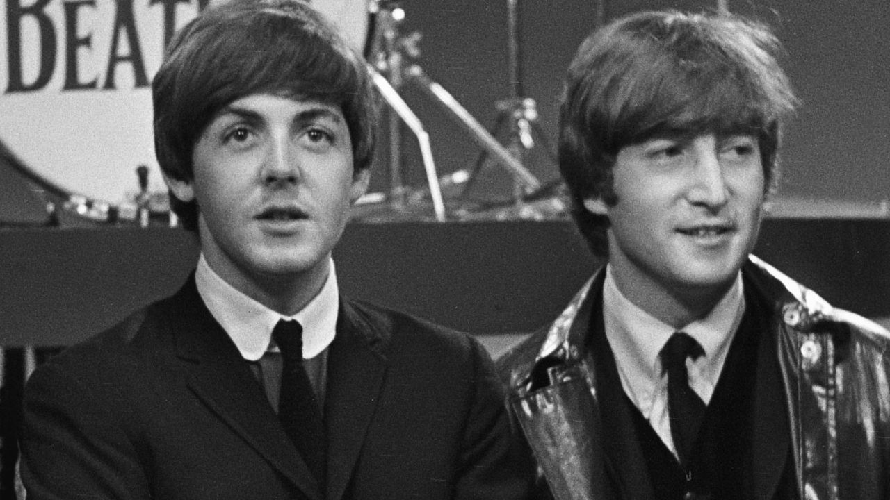
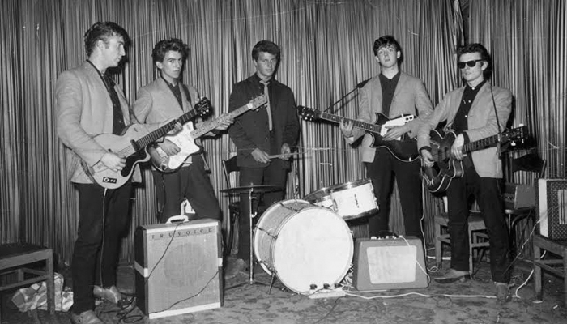
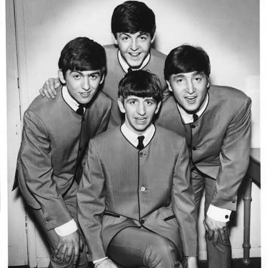
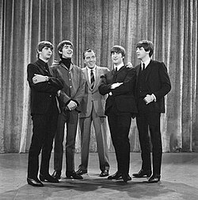
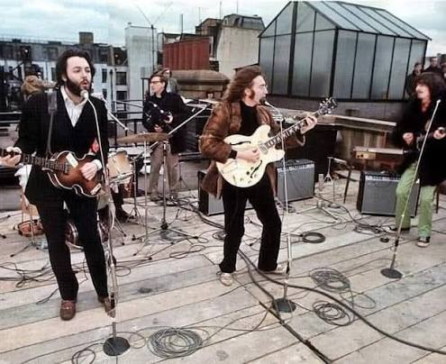
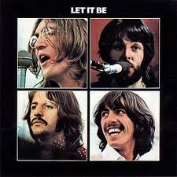

Linha do Tempo
Acompanhe os momentos mais marcantes da história do Quarteto de Liverpool.

O Encontro de John e Paul
John Lennon e Paul McCartney se conhecem em uma festa na igreja de St. Peter em Woolton, Liverpool. Paul logo se junta à banda de John, The Quarrymen.

Nascimento dos Beatles e Hamburgo
Com George Harrison na guitarra, a banda adota o nome "The Beatles" e parte para uma série de apresentações intensas nos clubes noturnos de Hamburgo, na Alemanha.

A Entrada de Ringo Starr
Ringo Starr assume as baquetas substituindo Pete Best, completando a formação clássica. No mesmo ano, lançam seu primeiro single oficial: "Love Me Do".

Conquista dos EUA e Beatlemania
A banda desembarca nos Estados Unidos e se apresenta no The Ed Sullivan Show para mais de 70 milhões de espectadores, consolidando o fenômeno global da Beatlemania.

Sgt. Pepper's e Inovação
Lançamento do revolucionário álbum Sgt. Pepper's Lonely Hearts Club Band, um marco na história da música moderna e na cultura psicodélica.

O Show no Telhado (Rooftop Concert)
Em 30 de janeiro de 1969, os Beatles realizam sua última apresentação pública juntos no telhado dos estúdios da Apple Corps em Londres.

O Fim da Banda
Anúncio oficial do fim dos Beatles e lançamento do álbum final, Let It Be. Cada membro segue para uma carreira solo de sucesso.